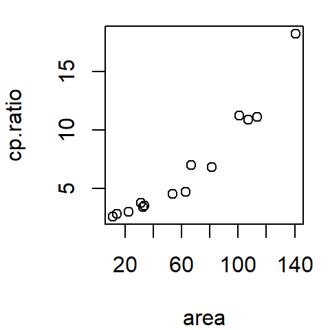

| ggplot2 |
|---|
| 3.4.4 |
24 Fits and residuals
Bivariate data are datasets that store two variables measured from a same observation (e.g. wind speed and temperature at each location). This differs from univariate data where only one variable is measured for each observation (e.g. temperature at each location). This chapter will explore common fitting strategies applied to bivariate data.
24.1 Scatter plot
A scatter plot is a popular visualization tool used to compare values between two variables. Sometimes one variable is deemed dependent on another variable; the latter being the independent variable. The dependent variable is also sometimes referred to as the response variable and the independent variable as the factor (this is not to be confused with the factor data type used in R as a grouping variable). The dependent variable is usually plotted on the y-axis and the independent variable is usually plotted on the x-axis. Other times, one does not seek a dependent-independent relationship between variables but is simply interested in studying the relationship between the tow variables.
A scatter plot can be generated using the base plotting environment as follows. Here, we’ll plot Cleveland’s Ganglion dataset.1
df <- read.csv("http://mgimond.github.io/ES218/Data/ganglion.csv")
plot(cp.ratio ~ area, dat = df)
Or, using ggplot2, as follows:
library(ggplot2)
ggplot(df, aes(x = area, y = cp.ratio)) + geom_point()
The data represent the ratio between the ganglion cell density of a cat’s central retina to that of its peripheral density (variable cp.ratio), and the cat’s retina surface area (area) during its early development (ranging from 35 to 62 days of gestation).
24.2 Fitting the data
Scatter plots are a good first start in visualizing bivariate data, but this is sometimes not enough. Our eyes need “guidance” to help perceive patterns. Another visual aid involves fitting the data with a line. We will explore two fitting strategies: the parametric fit and the non-parametric fit.
24.2.1 Parametric fit
A parametric fit is one where we impose a structure to the data–an example of which is a straight line (also referred to as a 1st order polynomial fit). The parametric fit is by far the most popular fitting strategy used in the realm of data analysis and statistics.
24.2.1.1 Fitting a straight line
A straight line is the simplest fit one can make to bivariate data. A popular method for fitting a straight line is the least-squares method. We’ll use R’s lm() function which provides us with a slope and intercept for the best fit line.
This can be implemented in the base plotting environment as follows:
M <- lm(cp.ratio ~ area, dat = df)
plot(cp.ratio ~ area, dat = df)
abline(M, col = "red")
In the ggplot2 plotting environment, we can make use of the stat_smooth function to generate the regression line.
library(ggplot2)
ggplot(df, aes(x = area, y = cp.ratio)) + geom_point() +
stat_smooth(method ="lm", se = FALSE)
The se = FALSE option prevents R from drawing a confidence envelope around the regression line. Confidence envelopes are used in inferential statistics (a topic not covered in this course).
The straight line is a first order polynomial with two parameters, \(a\) and \(b\), that define an equation that best describes the relationship between the two variables:
\[ y = a + b (x) \]
where \(a\) and \(b\) can be extracted from the regression model object M as follows:
coef(M)(Intercept) area
0.01399056 0.10733436 Thus \(a\) = 0.014 and \(b\) = 0.11.
24.2.1.2 Fitting a 2nd order polynomial
A second order polynomial is a three parameter function (\(a\), \(b\) and \(c\)) whose equation \(y = a + bx + cx^2\) defines a curve that best fits the data. We define such a relationship in R using the formula cp.ratio ~ area + I(area^2). The identity function I() preserves the arithmetic interpretation of area^2 as part of the model. Our new lm expression and resulting coefficients follow:
M2 <- lm(cp.ratio ~ area + I(area^2) , dat = df)
coef(M2) (Intercept) area I(area^2)
2.8684792029 -0.0118691702 0.0008393243 The quadratic fit is thus,
\[ y = 2.87 - 0.012 x + 0.000839 x^2 \]
In using the base plot environment, we cannot use abline to plot the predicted 2nd order polynomial curve since abline only draws straight lines. We will need to construct the line manually using the predict and lines functions.
plot(cp.ratio ~ area, dat=df)
x.pred <- data.frame( area = seq(min(df$area), max(df$area), length.out = 50) )
y.pred <- predict(M2, x.pred)
lines(x.pred$area, y.pred, col = "red")
To generate the same plot in ggplot2, simply pass the formula as an argument to stat_smooth:
ggplot(df, aes(x = area, y = cp.ratio)) + geom_point() +
stat_smooth(method = "lm", se = FALSE, formula = y ~ x + I(x^2) )
24.2.2 Non-parametric fits
Non-parametric fit applies to the family of fitting strategies that do not impose a structure on the data. Instead, they are designed to let the dataset reveal its inherent structure. One explored in this course is the loess fit.
24.2.2.1 Loess
A flexible curve fitting option is the loess curve (short for local regression; also known as the local weighted regression). Unlike the parametric approach to fitting a curve, the loess does not impose a structure on the data. The loess curve fits small segments of a regression lines across the range of x-values, then links the mid-points of these regression lines to generate the smooth curve. The range of x-values that contribute to each localized regression lines is defined by the \(\alpha\) parameter which usually ranges from 0.2 to 1. The larger the \(\alpha\) value, the smoother the curve. The other parameter that defines a loess curve is \(\lambda\): it defines the polynomial order of the localized regression line. This is usually set to 1 (though ggplot2’s implementation of the loess defaults to a 2nd order polynomial).
24.2.2.2 How a loess is constructed
Behind the scenes, each point (xi,yi) that defines the loess curve is constructed as follows:
- A subset of data points closest to point xi are identified (xi i shown as the vertical dashed line in the figures below). The number of points in the subset is computed by multiplying the bandwidth \(\alpha\) by the total number of observations. In our current example, \(\alpha\) is set to 0.5. The number of points defining the subset is thus 0.5 * 14 = 7. The points are identified in the light blue area of the plot in panel (a) of the figure below.
- The points in the subset are assigned weights. Greater weight is assigned to points closest to xi and vice versa. The weights define the points’ influence on the fitted line. Different weighting techniques can be implemented in a loess with the
gaussianweight being the most common. Another weighting strategy we will also explore later in this course is thesymmetricweight. - A regression line is fit to the subset of points. Points with smaller weights will have less leverage on the fitted line than points with larger weights. The fitted line can be either a first order polynomial fit or a second order polynomial fit.
- Next, the value yi from the regression line is computed. This is shown as the red dot in panel (d). This is one of the points that will define the shape of the loess.

The above steps are repeated for as many xi values practically possible. Note that when xi approaches an upper or lower x limit, the subset of points becomes skewed to one side of xi. For example, when estimating x10, the seven closest points to the right of x10 are selected. Likewise, for the upper bound x140, the seven closest points to the left of x140 are selected.

In the following example, just under 30 loess points are computed at equal intervals. This defines the shape of the loess.

It’s more conventional to plot the line segments than it is to plot the points.

24.2.2.3 Plotting a loess in R
The loess fit can be computed in R using the loess() function. It takes as arguments span (\(\alpha\)), and degree (\(\lambda\)).
# Fit loess function
lo <- loess(cp.ratio ~ area, df, span = 0.5, degree = 1)
# Predict loess values for a range of x-values
lo.x <- seq(min(df$area), max(df$area), length.out = 50)
lo.y <- predict(lo, lo.x)The modeled loess curve can be added to the scatter plot using the lines function.
plot(cp.ratio ~ area, dat = df)
lines(lo.x, lo.y, col = "red")
In ggplot2 simply pass the method="loess" parameter to the stat_smooth function.
ggplot(df, aes(x = area, y = cp.ratio)) + geom_point() +
stat_smooth(method = "loess", se = FALSE, span = 0.5)However, ggplot defaults to a second degree loess (i.e. the small regression line elements that define the loess are modeled using a 2nd order polynomial and not a 1st order polynomial). If a first order polynomial (degree=1) is desired, you need to include an argument list in the form of method.args=list(degree=1) to the stat_smooth function.
ggplot(df, aes(x = area, y = cp.ratio)) + geom_point() +
stat_smooth(method = "loess", se = FALSE, span = 0.5,
method.args = list(degree = 1) )
24.3 Residuals
Fitting the data with a line is just the first step in EDA. Your next step should be to explore the residuals. The residuals are the distances (parallel to the y-axis) between the observed points and the fitted line. The closer the points are to the line (i.e. the smaller the residuals) the better the fit.
The residuals can be computed using the residuals() function. It takes as argument the model object. For example, to extract the residuals from the linear model M computed earlier type,
residuals(M) 1 2 3 4 5 6 7 8 9 10
1.3596154 1.3146525 0.5267426 -0.1133131 -0.1421694 0.3998247 -1.2188692 -2.0509148 -1.8622085 -0.1704418
11 12 13 14
-0.5788861 0.4484394 -1.0727624 3.1602905 24.3.1 Residual-dependence plot
One way to visualize the residuals is to create a residual-dependence plot–this plots the residuals as a function of the x-values. We’ll do this using ggplot so that we can also fit a loess curve to help discern any pattern in the residuals.
df$residuals <- residuals(M)
ggplot(df, aes(x = area, y = residuals)) + geom_point() +
stat_smooth(method = "loess", se = FALSE, span = 1,
method.args = list(degree = 1) )
We are interested in identifying any pattern in the residuals. If the model does a good job in fitting the data, the points should be uniformly distributed across the plot and the loess fit should approximate a horizontal line. With the linear model M, we observe a convex pattern in the residuals suggesting that the linear model is not a good fit. We say that the residuals show dependence on the x values.
Next, we’ll look at the residuals from the second order polynomial model M2.
df$residuals2 <- residuals(M2)
ggplot(df, aes(x = area, y = residuals2)) + geom_point() +
stat_smooth(method = "loess", se = FALSE, span = 1,
method.args = list(degree = 1) )
There is no indication of dependency between the residual and the area values. The second order polynomial is a large improvement over the first order polynomial. Let’s look at the loess model.
df$residuals3 <- residuals(lo)
ggplot(df, aes(x = area, y = residuals3)) + geom_point() +
stat_smooth(method = "loess", se = FALSE, span = 1,
method.args = list(degree = 1) )
No surprise here. The loess model does a good job in capturing any overall pattern in the data. But note that this is to be expected given that the loess fit is a non-parametric model–it lets the data define its shape!
You may ask “if the loess model does such a good job in fitting the data, why bother with polynomial fits?” If you are seeking to generate a predictive model that explains the relationship between the y and x variables, then a mathematically tractable model (like a polynomial model) should be sought. If the interest is simply in identifying a pattern in the data, then a loess fit is a good choice.
A model is deemed “well defined” when its residuals are constant over the full range of \(x\). In essence, we expect a formula of the form:
\[ Y = a + bx + \epsilon \] where \(\epsilon\) is a constant that does not vary as a function of varying \(x\). This should sound quite familiar to you given that we’ve spent a good part of the univariate analysis section seeking a homogeneous spread in the data (i.e. a spread that did not change as a function of fitted group values). So what other diagnostic plots can we (and should we) generate from the fitted model? We explore such plots next.
24.3.2 Spread-location plot
The M2 and lo models do a good job in eliminating any dependence between residual and x-value. Next, we will check that the residuals do not show a dependence with fitted y-values. This is analogous to univariate analysis where we checked if residuals increased or decreased with increasing medians across factors. Here we will compare residuals to the fitted cp.ratio values (think of the fitted line as representing a level across different segments along the x-axis). We’ll generate a spread-level plot of model M2’s residuals (note that in the realm of regression analysis, such plot is often referred to as a scale-location plot). We’ll also add a loess curve to help visualize any patterns in the plot.
sl2 <- data.frame( std.res = sqrt(abs(residuals(M2))),
fit = predict(M2))
ggplot(sl2, aes(x = fit, y =std.res)) + geom_point() +
stat_smooth(method = "loess", se = FALSE, span = 1,
method.args = list(degree = 1) )
The function predict() extracts the y-values from the fitted model M2 and is plotted along the x-axis. It’s clear from this plot that the residuals are not homogeneous; they increase as a function of increasing fitted CP ratio. The “bend” observed in the loess curve is most likely due to a single point at the far (right) end of the fitted range. Given that we have a small batch of numbers, a loess can be easily influenced by an outlier. We may want to increase the loess span.
ggplot(sl2, aes(x = fit, y = std.res)) + geom_point() +
stat_smooth(method = "loess", se = FALSE, span = 1.5,
method.args = list(degree = 1) )
The point’s influence is reduced enough to convince us that the observed monotonic increase is real (Note that we would observe this monotone spread with our loess model as well).
We learned with the univariate data that re-expressing values was one way to correct for any increasing or decreasing spreads across the range of fitted values. At this point, we may want to look into re-expressing the data. But, before we do, we’ll explore another diagnostic plot: the normal q-q plot.
24.3.3 Checking residuals for normality
If you are interested in conducting a hypothesis test (i.e. addressing the question “is the slope significantly different from 0”) you will likely want to check the residuals for normality since this is an assumption made when computing a confidence interval and a p-value.
In ggplot, we learned that a normal q-q plot could be generated using the stat_qq and stat_qq_line function.
ggplot(df, aes(sample = residuals2)) +
stat_qq(distribution = qnorm) +
stat_qq_line(distribution = qnorm, col = "blue")
Here, the residuals seem to stray a little from a normal distribution.
24.4 Re-expressing the data
The monotone spread can be problematic if we are to characterize the spread of cp.ratio as being the same (homogeneous) across the full range of area values. To remedy this, we can re-express the cp.ratio values. Variables measured as ratios (such is the case with cp.ratio) are good candidates for log transformation. We will therefore fit a new linear model to the data after transforming the y-value.
df.log <- data.frame( area = df$area, cp.ratio.log = log(df$cp.ratio))
M3 <- lm(cp.ratio.log ~ area, dat = df.log)Transforming a variable, whether \(x\) or \(y\), will change the nature of the relationship between both variables. We therefore need to recreate the scatter plot. We’ll also see how well a 1st order polynomial can characterize this relationship (re-expressing values can sometimes help “straighten” a relationship between variables, hence why we are not starting off first with a 2nd order polynomial fit).
ggplot(df.log, aes(x = area, y = cp.ratio.log)) + geom_point() +
stat_smooth(method = "lm", se = FALSE)
At first glance, the log transformation seems to have done a good job at straightening the batch of values. Next, let’s look at the residual-dependence plot.
df.log$residuals <- residuals(M3)
ggplot(df.log, aes(x = area, y = residuals)) + geom_point() +
stat_smooth(method = "loess", se = FALSE, span = 1,
method.args = list(degree = 1) )
Logging the y values has eliminated the residual’s dependence on area. Next, let’s assess homogeneity in the residuals using the s-l plot.
sl3 <- data.frame( std.res = sqrt(abs(residuals(M3))),
fit = predict(M3))
ggplot(sl3, aes(x = fit, y = std.res)) + geom_point() +
stat_smooth(method ="loess", se = FALSE, span = 1,
method.args=list(degree = 1) )
Even though we observe a mid range peak in spread, we do not observe a systematic increase in spread. The log transformation seems to have removed the monotone spread.
Finally, we’ll check for normality of the residuals.
ggplot(df.log, aes(sample = residuals)) +
geom_qq(distribution = qnorm) +
geom_qq_line(distribution = qnorm, col = "blue")
Re-expressing the data seems to have improved the normality of the residuals somewhat. Though not perfect, more points seem to follow a straight line. But, recall from chapter 18.4 that noise can be quite prominent in a normal q-q plot when working with small datasets.
Cleveland, William. Visualizing data. Hobart Press. 1993. [pp 87-88]↩︎